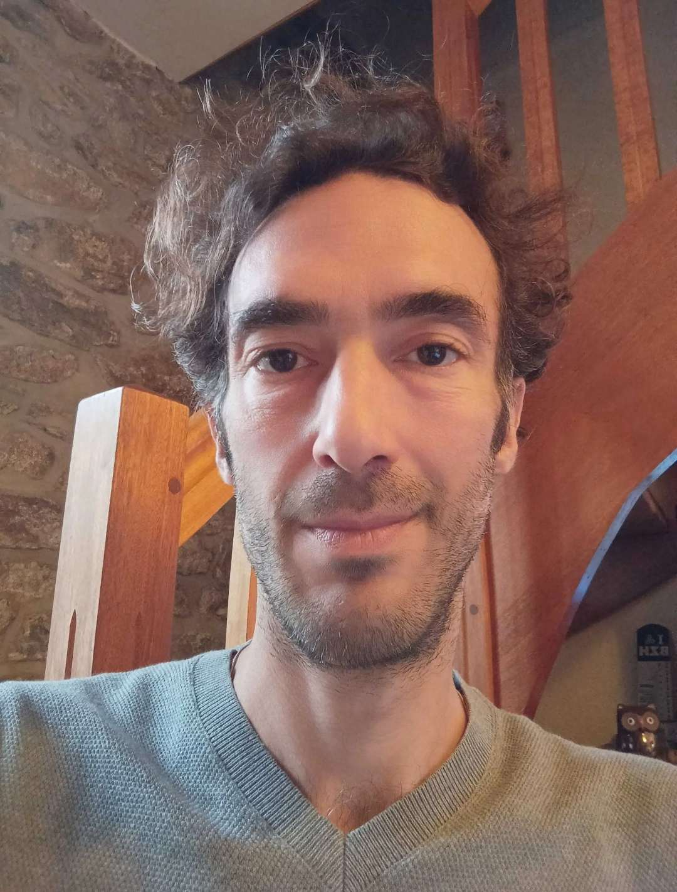

Qui Suis-je ?
Comme précisé, je me prénomme Nico, je suis passsionné de photographie et amateur d'urbex, d'architecture et de paysage. Mais cela ne reste qu'une passion. Professionnellement, je suis développeur informatique et j'envisage de me former pour effectuer une reconversion et un perfectionnement.

D'où viens-je ?
Je suis né à Tours, j'ai vécu dans la campagne Tourangelle jusqu'à mes 18 ans. Ensuite, j'ai vécu sur le bassin d'Arcachon, où j'ai travillé 3 ans en tant que saisonnier. Puis 3 ans à Bordeaux, où j'ai travaillé comme chef de rayon dans la grande distribution. En 2008, j'ai obtenu mon diplôme d'"Analyste Dévellopeur Informatique" niveau 5 Depuis cette date, j'ai travaillé dans l'éditique pendant 10 ans avant de subir une maladie chronique. En 2024, j'ai obtenu un autre diplôme de "Concepteur Développeur d'Applications" niveau 6. Suite à l'engouement des entreprises et recruteurs pour l'IA et au fait que ces derniers demandedaient à minima 2 à 3 ans d'expérience, j'ai vu toutes les opportunités se refermer. A ce jour, je reste sans emploi depuis 2017. Heureusement, ma maladie s'est stabilisée, voire disparue pour certaines de ses composantes. C'est pour cela que je postule aujourd'hui à cette formation dispensée par le GRETA afin de me remettre à niveau et apprendre de nouvelles méthodes de développement et de travail.
Où vais-je ?
Heureusement, ma maladie s'est stabilisée, voire disparue pour certaines de ses composantes. C'est pour cela que je postule aujourd'hui à cette formation dispensée par le GRETA afin de me remettre à niveau et apprendre de nouvelles méthodes de développement et de travail. J'envisage donc toujours de pouvoir devenir développeur web et éventuellement à terme me tourner vers un poste de chef de projet.
Mes qualités principales
- Rigoureux
- Perséverant
- Esprit d'équipe et autonomie
Mes prochaines étapes
- Suivre les cours d'été
- Entrer en formation et obtenir mon diplôme
- Trouver un emploi dans lequel je puisse m'épanouir
Il est fréquent que je consulte le site suivant pour rechercher des informations et apprendre
www.w3schools.com